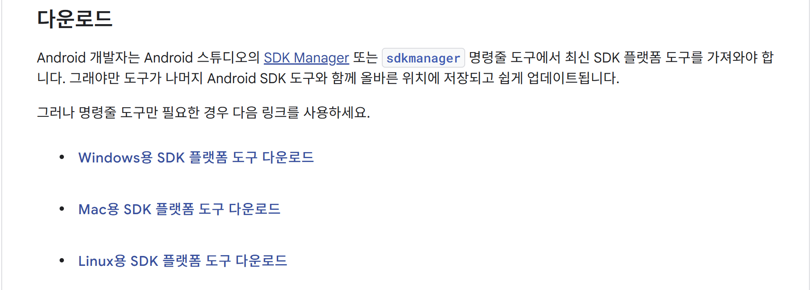
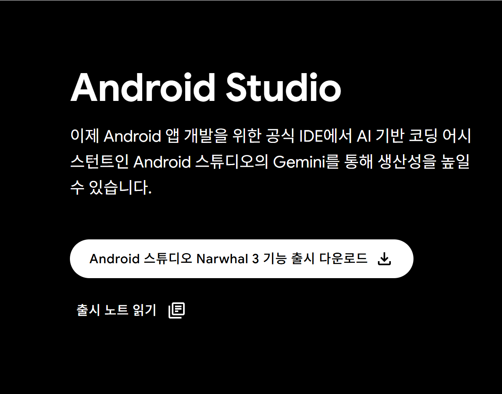
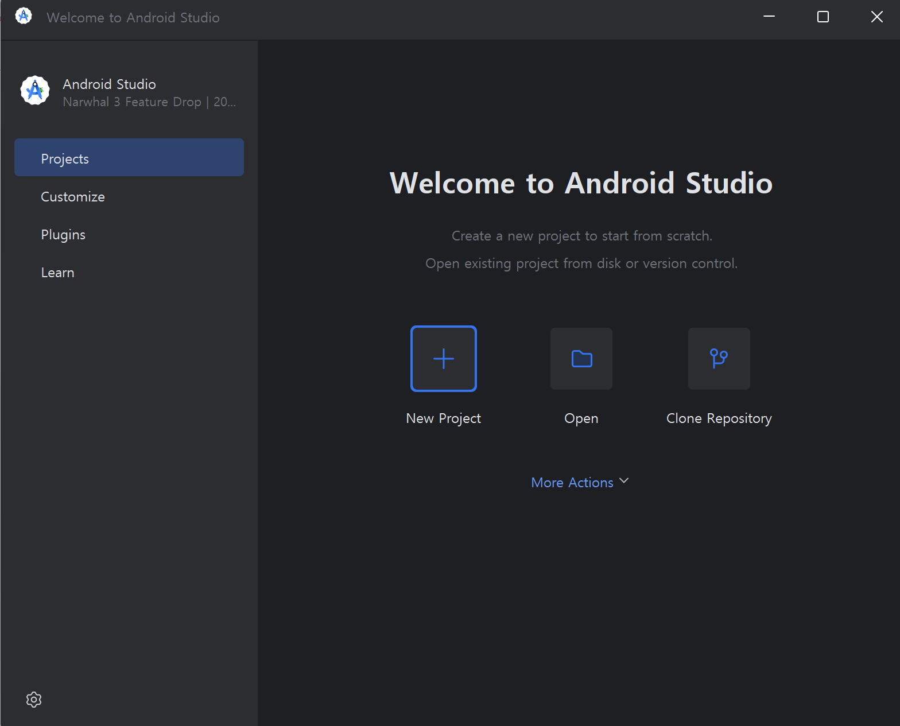
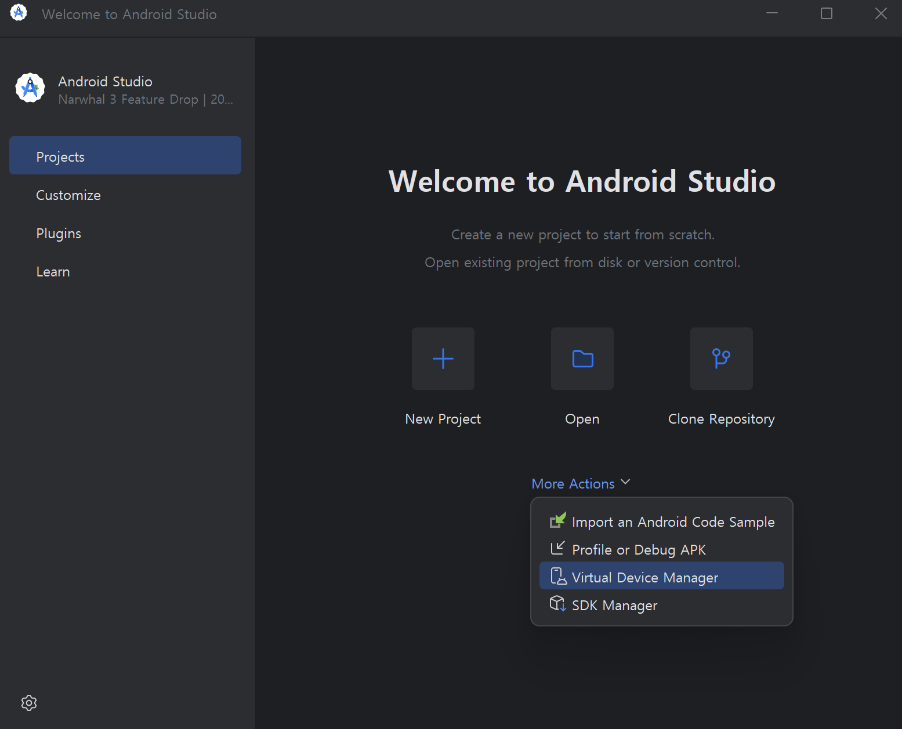
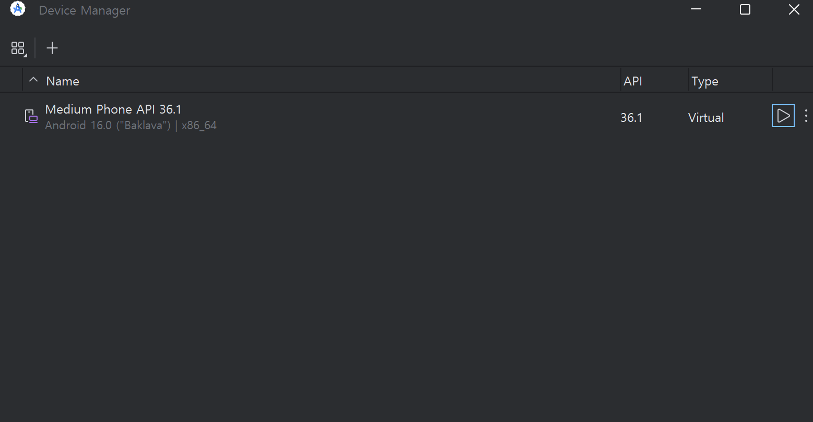
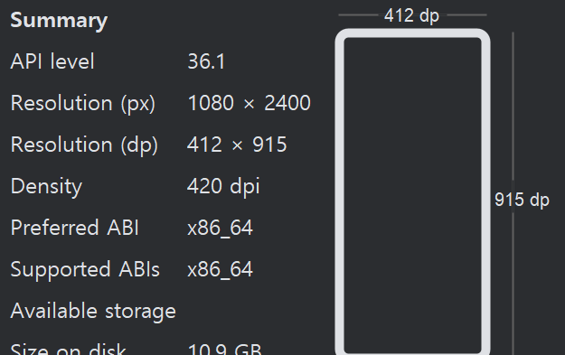
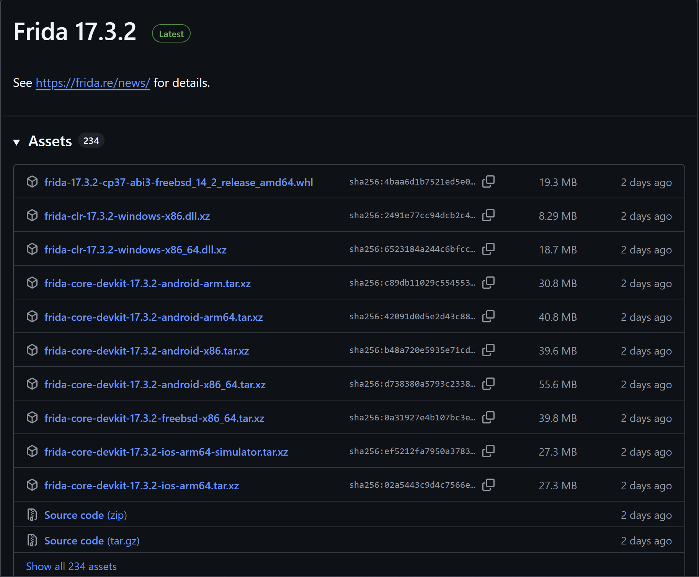
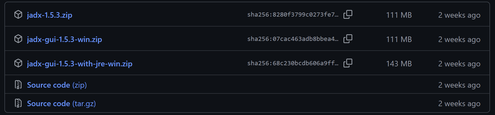

팀 프로젝트로 안드로이드 모바일 애플리케이션을 분석하는 프로젝트를 선택하였다.
이번 1주차에는 분석을 위한 툴을 설치하는 작업을 진행하고자 한다.
설치하려는 툴은 ADB, Android Studio, Frida, JADX 이다.
ADB(Android Debug Bridge)
다음 링크를 통해서 설치할 수 있다.
https://developer.android.com/tools/releases/platform-tools?hl=ko
SDK 플랫폼 도구 출시 노트 | Android Studio | Android Developers
Android SDK 플랫폼 도구는 Android SDK의 구성요소입니다.
developer.android.com

ADB 를 원할하게 터미널에서 실행하기 위해서 추가로 환경 변수를 설정해야 한다.
Windows + R 을 친 다음 sysdm.cpl 로 시스템 속성에 들어갈 수 있다.
고급에서 환경 변수로 들어간 다음 시스템 변수의 새로 만들기로 ADB 가 설치된 경로를 입력하면 된다.
그 후 터미널에서 adb version 명령어를 사용해서 정상적으로 실행되는지 확인하면 끝이다.
C:\Users\사용자이름>adb version
Android Debug Bridge version 1.0.41
Version 36.0.0-13206524
Installed as C:\adb\platform-tools-latest-windows\platform-tools\adb.exe
Running on Windows 10.0.26100
Android Studio
다음 사이트에 들어가서 설치할 수 있다.
https://developer.android.com/studio/?hl=ko
Android 스튜디오 및 앱 도구 다운로드 - Android 개발자 | Android Studio | Android Developers
Android Studio provides app builders with an integrated development environment (IDE) optimized for Android apps. Download Android Studio today.
developer.android.com

다운로드를 한 후에는 모두 Next, Accept 를 누르면 된다.
※ 설치할 때 한글이 있으면 안된다. 필자는 한글 때문에 여러 고생을 했다.

이렇게 나오면 설치는 성공한 것이다.
Frida
Frida 설치 방식은 ADB, Android Studio 에서 설치한 방식이랑 다르다.
Frida 는 Python 으로 작성된 툴이라 먼저 Python 이 설치되어야 한다.
Python 은 다음 사이트에서 설치할 수 있다.
※ 3.x 버전에서만 지원된다.
https://www.python.org/downloads/
Download Python
The official home of the Python Programming Language
www.python.org
Python 이 설치되었다면 이제 Frida 를 설치해보겠다.
Frida는 패키지, 서버로 나누어져있는데
분석을 진행하는 호스트 PC에는 패키지를
앱이 실행되는 단말기나 에뮬레이터 등의 디바이스에는 서버를 설치하면 된다.
먼저 Frida 패키지를 설치하겠다.
pip3 install frida 를 입력하면 설치가 된다.
C:\Users\사용자이름>pip3 install frida
Collecting frida
Downloading frida-17.3.2-cp37-abi3-win_amd64.whl.metadata (2.3 kB)
Downloading frida-17.3.2-cp37-abi3-win_amd64.whl (41.8 MB)
━━━━━━━━━━━━━━━━━━━━━━━━━━━━━━━━━━━━━━━━ 41.8/41.8 MB 41.0 MB/s eta 0:00:00
Installing collected packages: frida
Successfully installed frida-17.3.2그리고 pip3 instal frida-tools 를 설치하면 패키지 설치가 끝난다.
C:\Users\사용자이름>pip3 install frida-tools
Collecting frida-tools
Downloading frida-tools-14.4.5.tar.gz (4.7 MB)
━━━━━━━━━━━━━━━━━━━━━━━━━━━━━━━━━━━━━━━━ 4.7/4.7 MB 32.8 MB/s eta 0:00:00
Installing build dependencies ... done
Getting requirements to build wheel ... done
Preparing metadata (pyproject.toml) ... done
Collecting colorama<1.0.0,>=0.2.7 (from frida-tools)
Downloading colorama-0.4.6-py2.py3-none-any.whl.metadata (17 kB)
Requirement already satisfied: frida<18.0.0,>=17.2.8 in c:\users\사용자이름\appdata\local\programs\python\python313\lib\site-packages (from frida-tools) (17.3.2)
Collecting prompt-toolkit<4.0.0,>=2.0.0 (from frida-tools)
Downloading prompt_toolkit-3.0.52-py3-none-any.whl.metadata (6.4 kB)
Collecting pygments<3.0.0,>=2.0.2 (from frida-tools)
Downloading pygments-2.19.2-py3-none-any.whl.metadata (2.5 kB)
Collecting websockets<14.0.0,>=13.0.0 (from frida-tools)
Downloading websockets-13.1-cp313-cp313-win_amd64.whl.metadata (7.0 kB)
Collecting wcwidth (from prompt-toolkit<4.0.0,>=2.0.0->frida-tools)
Downloading wcwidth-0.2.13-py2.py3-none-any.whl.metadata (14 kB)
Downloading colorama-0.4.6-py2.py3-none-any.whl (25 kB)
Downloading prompt_toolkit-3.0.52-py3-none-any.whl (391 kB)
Downloading pygments-2.19.2-py3-none-any.whl (1.2 MB)
━━━━━━━━━━━━━━━━━━━━━━━━━━━━━━━━━━━━━━━━ 1.2/1.2 MB 26.5 MB/s eta 0:00:00
Downloading websockets-13.1-cp313-cp313-win_amd64.whl (159 kB)
Downloading wcwidth-0.2.13-py2.py3-none-any.whl (34 kB)
Building wheels for collected packages: frida-tools
Building wheel for frida-tools (pyproject.toml) ... done
Created wheel for frida-tools: filename=frida_tools-14.4.5-py3-none-any.whl size=4699595 sha256=1237342efd054ab466f18769a0a662474be173e2ac760364e8b642730025b1ce
Stored in directory: c:\users\김범준\appdata\local\pip\cache\wheels\a6\b2\fb\eff238e22a7ceffee8c7a366ce7ff4011af13c77a103f870d4
Successfully built frida-tools
Installing collected packages: wcwidth, websockets, pygments, prompt-toolkit, colorama, frida-tools
Successfully installed colorama-0.4.6 frida-tools-14.4.5 prompt-toolkit-3.0.52 pygments-2.19.2 wcwidth-0.2.13 websockets-13.1다음은 Frida 서버를 설치하겠다.
나는 Android Studio 를 사용해서 여기에 설치를 하지만
다른 에뮬레이터나 단말기에서도 설치할 수 있다.
다음 깃허브 사이트에서 버전에 맞게 설치해야 한다,
https://github.com/frida/frida/releases
Releases · frida/frida
Clone this repo to build Frida. Contribute to frida/frida development by creating an account on GitHub.
github.com
버전에 맞게 설치하기 위해서 먼저 버전을 확인해보겠다.
frida --version 으로 Frida 버전을 확인할 수 있다.
PS C:\Users\사용자이름> frida --version
17.3.2내 경우 17.3.2 버전이다.
그 다음 Android Studio 에 들어가서
More Actions 를 누른 다음
Virtual Device Manager 를 클릭한다.

그러면 다음과 같이 디바이스가 있다.

여기서 맨 오른쪽 점 세 개 아이콘을 누르고
View Details 를 눌러 버전을 확인할 수 있다.

나는 x86_x64 버전을 사용하고 있는 것을 확인할 수 있다.
그럼 다시 말해서 나는 17.3.2 버전에 x86_x64 아키텍처인 Frida 서버를 설치해야 한다.
이제 깃허브 사이트에 들어가보자.

다음과 같이 나오는데
나는 세 번째 줄 frida-clr-17.3.2-windows-x86_64.dll.xz 를 설치하면 된다.
만약 버전이 보이지 않으면 Show all 을 눌러 확인하면 된다.
이제 adb를 통해서 서버를 에뮬레이터로 옮기는 작업을 하겠다.
이때 에뮬레이터가 실행 중이어야 하니 꼭 에뮬레이터를 키도록 하자.
adb push .\frida-server /data/local/tmp/frida-server 를 쳐서 푸시를 했다.
※ 다운받은 서버 파일을 frida-server 라는 이름으로 바꾸었다.
D:\My Projects\Mobile Analysis>adb push .\frida-server /data/local/tmp/frida-server
.\frida-server\: 1 file pushed, 0 skipped. 110.8 MB/s (65754112 bytes in 0.566s)그 다음 frida-server 에 755 권한을 주었다.
adb shell chmod 755 /data/local/tmp/frida-server이제 서버를 명령어로 실행하면 끝이다.
D:\My Projects\Mobile Analysis>adb shell
emu64xa:/ $ ./frida-server-17.3.2-android-x86_64 &frida-ps -Ua 를 입력하여 제대로 실행되었는지 확인할 수 있다.
C:\Users\사용자이름>frida-ps -Ua
PID Name Identifier
---- ----------------- ---------------------------------------
4312 Camera com.android.camera2
3686 Chrome com.android.chrome
2129 Google com.google.android.googlequicksearchbox
2129 Google com.google.android.googlequicksearchbox
2996 Google Play Store com.android.vending
4713 Messages com.google.android.apps.messaging
4718 Personal Safety com.google.android.apps.safetyhub
3941 Phone com.google.android.dialer
1439 SIM Toolkit com.android.stk
3913 Settings com.android.settingsJADX
다음 깃허브 사이트에서 JADX 를 다운받을 수 있다.
https://github.com/skylot/jadx/releases
Releases · skylot/jadx
Dex to Java decompiler. Contribute to skylot/jadx development by creating an account on GitHub.
github.com

나는 GUI 를 원해서 jadx-gui-1.5.3-win.zip 으로 다운을 받았다.
후기
ADB, Android Studio, JADX를 설치하는 것은 쉬웠지만
Frida를 설치하는 것이 조금 힘들었다.
adb shell을 한 후 서버를 실행하는데 계속 오류가 나서 조사를 해보다가
혹시 몰라 실행되고 있는지 명령어를 쳐보니 잘 실행되고 있었다.
그리고 Android Studio 경로에 한글이 있으면 안되서 사용자 폴더 이름을 영어로 바꾸려고 하다 실패했다.
경로에 영어만 있다면 계속 해도 되지만 한글이 있다면 다른 경로나 한글을 영어로 바꾸는 것을 권장한다.